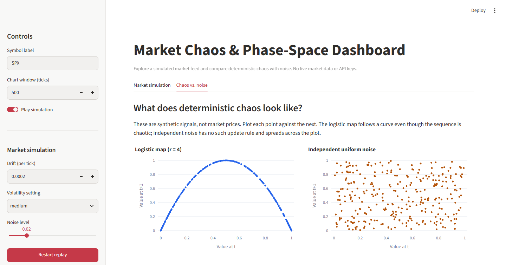

Logistic map
xt+1 = rxt(1 − xt)
Market Chaos & Phase-Space Dashboard
Put each value on the horizontal axis and the next value on the vertical axis. The chaotic logistic map traces a curve. The noise fills a cloud.
Run the full Python dashboard on GitHubxt+1 = rxt(1 − xt)
Seed: 42 · No logistic-map update rule
At r = 3.20 the map alternates between two states after a short warm-up. At r = 4.00 it behaves chaotically, but the same update rule still ties each point to the next. Both plots use the same 0–1 scale. This is a synthetic example, not a test for chaos in financial markets.
This browser demo illustrates the comparison tab. The separate Python dashboard also includes a simulated market feed, volatility controls, and experimental rolling metrics.
